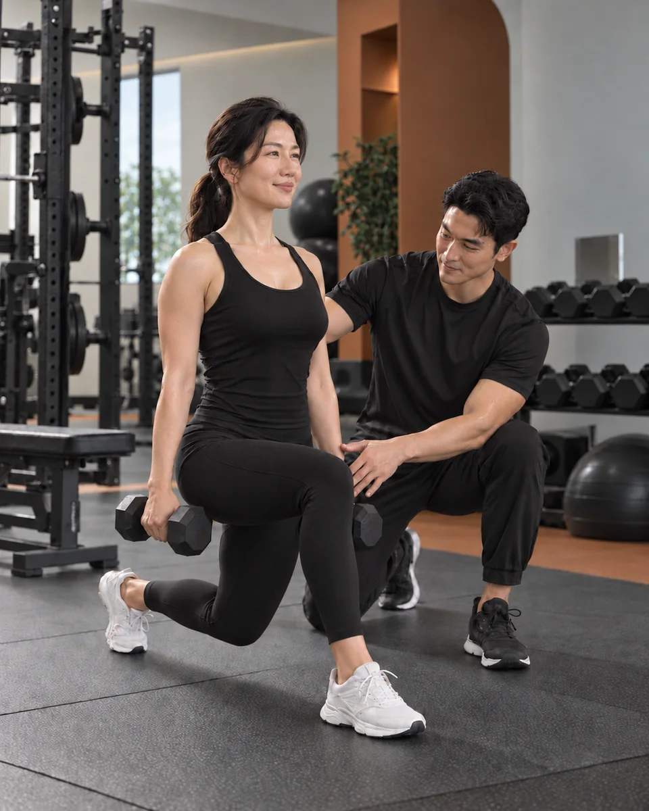
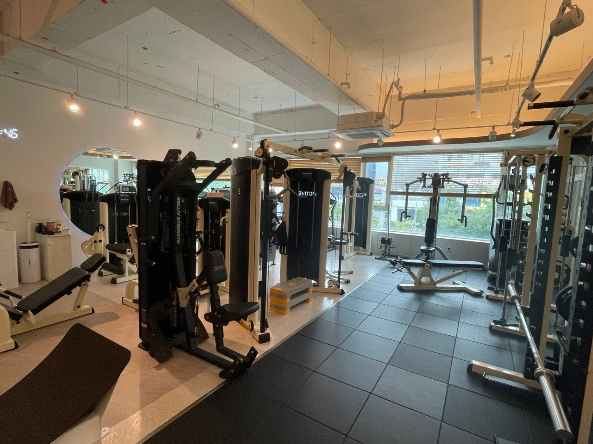
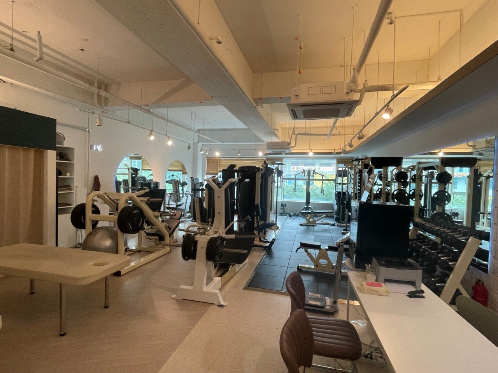

식단으로 체중을 줄여도 곧 이전 생활로 돌아간다.
모티브짐 / BODY SHAPE PT
SEONGBOK BODY SHAPE PT
잠깐의 변화보다,
오래 유지되는 몸을.
체중만 빠르게 줄이는 수업이 아닙니다. 현재 움직임과 근력, 체지방, 생활 리듬을 함께 살펴 운동을 멈추면 되돌아가는 방식에서 벗어나, 내 일상 안에서 이어갈 수 있는 몸 관리 기준을 만듭니다.

BODY CHANGE CHECK
노력은 반복하는데,
몸이 자꾸 제자리라면.
의지가 부족해서가 아니라 목표와 생활에 맞지 않는 방법을 반복했을 수 있습니다. 체중 하나만 보기보다 지금의 운동 경험, 근력과 체지방, 일상 리듬을 함께 살펴야 다음 계획이 선명해집니다.
체중은 정상인데 근력과 체력이 부족하다고 느낀다.
운동을 해도 원하는 체형 변화가 잘 보이지 않는다.
유산소와 근력운동 중 무엇부터 해야 할지 모르겠다.
업무와 육아 때문에 강한 계획을 오래 지키기 어렵다.
짧게 몰아서 운동하고 오래 쉬는 패턴이 반복된다.

A REALISTIC START
완벽한 계획보다, 실제로 이어갈 수 있는 기준부터.
현재 생활과 운동 경험을 기준으로 동작과 강도를 정합니다. 무리해서 시작하고 오래 쉬는 반복을 줄이며, 한 단계씩 몸의 적응을 쌓습니다.
모티브짐 실제 운동 공간입니다.

모티브짐 실제 운동 공간BEYOND THE NUMBER
몸의 변화는
체중 하나로 설명되지 않습니다.
같은 체중이라도 근육량, 체지방, 움직임 습관과 체형에 따라 몸의 느낌과 일상에서 쓰는 힘은 달라집니다.
BODY SHAPE PT는 무리한 제한이나 단기 결과보다 근력운동, 움직임의 질, 회복과 생활 속 실천을 함께 설계합니다. 목표는 잠깐 만드는 몸이 아니라 스스로 관리할 수 있는 기준을 갖는 것입니다.
개인의 변화 속도와 결과는 운동 경험, 생활 습관, 참여 빈도 등에 따라 다를 수 있습니다.
FOUR FOUNDATIONS
BODY SHAPE PT가 다루는
네 가지 기준.
외형만 보거나 수치만 쫓지 않습니다. 현재 몸의 사용 방식부터 운동을 이어가는 습관까지 하나의 계획으로 연결합니다.
체형과 움직임
서기, 앉기, 밀기, 당기기 등 기본 동작에서 몸을 사용하는 패턴을 살피고 더 안정적으로 움직이는 방법을 익힙니다.
근력과 근육량
현재 수준에 맞는 저항운동으로 몸을 지탱하는 힘을 단계적으로 쌓습니다.
체지방 관리
체중과 체지방 수치는 변화의 참고 자료로 활용하고, 운동 수행과 생활 리듬을 함께 보며 계획을 조정합니다.
운동 습관
현실적인 수업 빈도와 회복, 일상 실천을 연결해 중단과 재시작의 반복을 줄입니다.
HOW WE BUILD
무리한 계획보다,
이어갈 수 있는 순서로.
처음부터 완벽하게 하려 하지 않습니다. 현재 상태를 기준으로 시작하고, 실제 수행 기록에 맞춰 다음 단계를 정합니다.
목표와 생활 대화
원하는 변화, 운동 경험, 하루 활동량과 꾸준히 지키기 어려웠던 이유를 듣습니다.
현재 상태 확인
기본 움직임과 근력 수준, 활용 가능한 신체 구성 자료를 살펴 출발점을 정합니다.
개인별 수업 설계
체형, 근력, 체지방 관리 목표에 맞춰 동작과 강도, 수업 흐름을 구성합니다.
기록과 조정
운동 수행과 몸의 반응, 생활 변화에 맞춰 강도와 계획을 지속적으로 조정합니다.
PERSONAL PLAN
몸의 반응과 기록에 맞춰 다음 단계를 정합니다.
정해진 프로그램을 그대로 반복하지 않습니다. 동작 수행과 회복, 생활 변화에 맞춰 운동 강도와 순서를 조정합니다.
모티브짐 실제 운동 공간입니다.
WHY MOTIVE GYM
나에게 맞는 변화와
운동 습관을 함께 만듭니다.
모티브짐은 고객님의 목표와 현재 몸 상태, 생활 습관을 살펴 지속할 수 있는 운동 계획을 세웁니다.
체형과 근력, 움직임을 함께 고려해 지금의 생활에 맞는 훈련을 진행합니다. 운동 과정을 살피고 계획을 조정하며 꾸준한 변화를 돕습니다.
목표와 생활 습관 확인
개인에게 맞춘 근력 운동
변화 확인과 계획 조정
BODY SHAPE PT FAQ
시작 전에
많이 묻는 질문.
체중 감량만을 위한 PT인가요?
체중 감량은 가능한 목표 중 하나지만 전부는 아닙니다. 체형, 근력과 근육량, 체지방, 운동 습관을 함께 살펴 오래 이어갈 수 있는 변화를 목표로 합니다.
운동을 처음 시작해도 괜찮나요?
네. 운동 경험이 적거나 오래 쉬었던 분도 기본 동작부터 현재 수준에 맞춰 시작할 수 있습니다.
식단을 아주 엄격하게 해야 하나요?
극단적인 제한보다 현재 생활에서 실천할 수 있는 식사와 운동 습관을 찾는 데 초점을 둡니다. 필요한 범위에서 일반적인 생활 습관을 함께 점검합니다.
변화를 확인하려면 얼마나 걸리나요?
운동 경험, 생활 습관, 참여 빈도와 목표에 따라 다릅니다. 특정 기간이나 결과를 보장하기보다 수행 기록과 몸의 반응을 보며 계획을 조정합니다.
목·허리·어깨가 불편해도 운동할 수 있나요?
불편함의 정도와 현재 상태에 따라 운동 가능 범위가 달라질 수 있습니다. 증상이 심하거나 운동 가능 여부가 불확실하다면 먼저 의료진의 확인이 필요합니다.
상담은 어떻게 시작하나요?
네이버 톡톡 무료상담에서 원하는 변화, 운동 경험과 현재 고민을 먼저 알려주세요. 상담 후 필요한 경우 개인 수업 방향을 안내해 드립니다.
START WITH MOTIVE
급하게 바꾸기보다,
오래 유지할 수 있게.
오늘보다 편하게, 다시 잘 움직이게.
성복역 4번 출구 앞 모티브짐에서 내 생활에 맞는 변화부터 시작하세요.
상담은 무료이며, PT 수업과 비용은 상담 후 별도로 안내합니다.